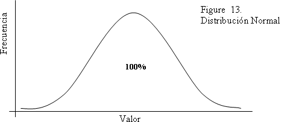

Tema 2: La distribución normal
Una distribución normal (Figura 13), también llamada distribución de ‘campana’, es un tipo específico de distribución continua. Una distribución normal es simétrica, exactamente como el perfil de una ‘campana’ y, por lo tanto, susceptible de propiedades que permiten sofisticados análisis matemáticos.
La curva del gráfico es llamada “normal” debido a que es la manera más común en la que se distribuyen las variables en la naturaleza. La distribución normal es una representación estadística de aleatoriedad. Las variables determinadas por una compleja combinación de múltiples factores tienden a comportarse, en jerga estadística, ‘normalmente’.
Un buen ejemplo de una distribución normal es la distribución de los resultados en un examen. La distribución de las calificaciones obtenidas en exámenes tiende a comportarse de forma normal, ya que los resultados son ocasionados por una compleja combinación de múltiples factores. Entre ellos: la educación de los padres, el ingreso familiar, la genética, el tiempo dedicado al estudio de la materia, la calidad de los maestros, las preferencias del estudiante y su personalidad, las características de la escuela, etc. Los diferentes factores tienden a compensarse entre sí, generando una situación en la cual la mayoría de los estudiantes tiende a presentar un rendimiento alrededor del promedio y sólo unos pocos en realidad se destacan o tienen un bajo rendimiento.